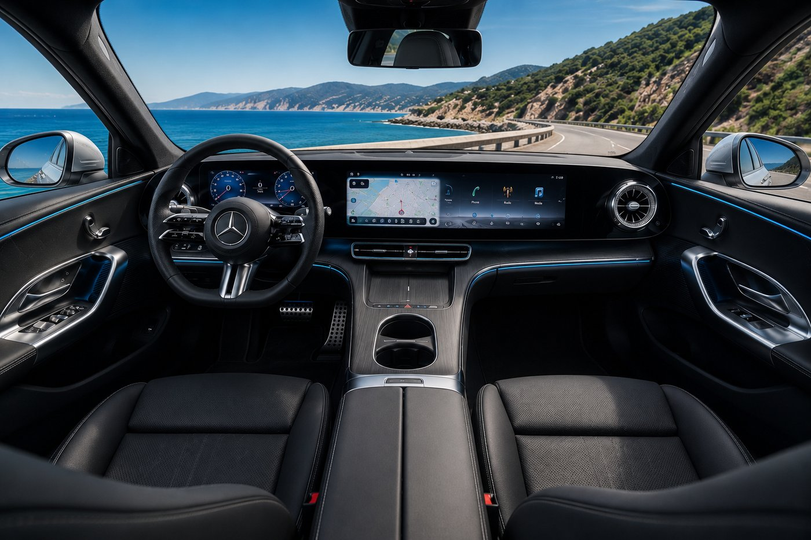
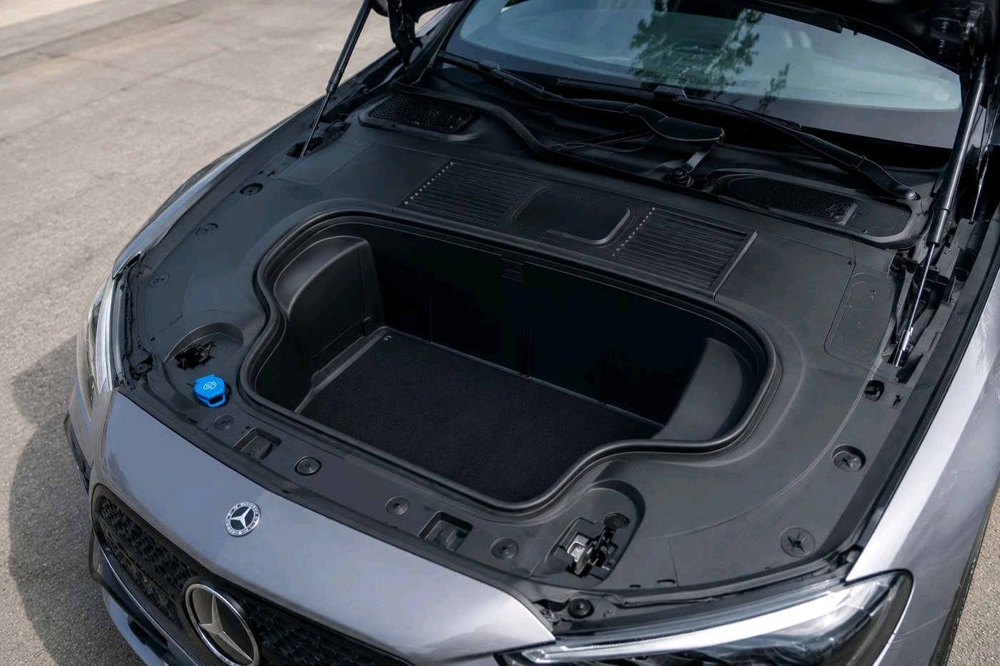

For the better part of a decade, Mercedes tried to convince the world that an electric car needed to look like nothing that came before it. The EQS and EQE arrived as smooth, wind cheating shapes that were efficient on paper and polarizing in the metal, and buyers largely shrugged. The new electric C-Class, badged C 400 4Matic and due at U.S. dealerships in the first half of 2027, is Mercedes quietly walking that experiment back. It doesn't look like an EQ. It looks like a C-Class, and that turns out to be the smarter move.
This is the sixth generation of the C-Class nameplate, and the first time an electric version has arrived ahead of the gas powered cars rather than trailing behind them. Instead of a slippery blob shape, the new EV borrows a low, flat front end and a taut roofline that flows into a coupe like rear, styling cues drawn from the brand's own history rather than a wind tunnel brief. Mercedes has said the look nods to older models like the W111 and W108, filtered through a modern lens.
What's actually powering it
The launch version is the C 400 4Matic, running two permanent magnet electric motors, one on each axle, for a combined 483 horsepower and 590 lb-ft of torque. The front motor includes a disconnect clutch, letting it decouple entirely during steady cruising so the car can coast on the rear motor alone and save energy. Mercedes quotes zero to 60 mph in 3.9 seconds, with top speed electronically capped at 130 mph.
Oddly for an EV, there's a two speed transmission involved. A short first gear handles initial acceleration and lower speed driving, while a taller second gear takes over at highway speed. It's a detail more associated with performance EVs trying to manage motor efficiency across a wider speed range, and it shows up here in what is nominally a mid-size luxury sedan rather than a halo model.

Advertisement
Battery, charging, and the range number that matters
A 94 kWh battery sits in the floor, built on an 800 volt architecture that supports DC fast charging up to 330 kW. Mercedes' own range estimate, on Europe's more forgiving WLTP test cycle, lands at roughly 473 miles. That figure will almost certainly come down once the EPA runs its own numbers for the U.S. market, since WLTP consistently reads more optimistic than the American test, but even a meaningfully reduced real world figure would still be competitive in the segment.
A single motor, rear wheel drive variant with a longer range estimate is expected to follow later in 2027, aimed at buyers who don't need all wheel drive and would rather trade some power for efficiency.
The detail most EVs skip
Despite the coupe like roofline, the C 400 4Matic keeps a conventional trunk, rated at 470 liters, rather than the hatchback style opening some rivals use to disguise a sloped roof. It also has a front trunk, a 101 liter frunk in the space where an engine would normally sit. That's not a given in this segment. Plenty of electric sedans skip the frunk entirely or reduce it to a token storage bin barely big enough for a charging cable.

Where it actually sits in the market
Mercedes is pricing the C 400 4Matic at around $55,000 to start, positioning it directly against the Tesla Model 3, Lexus ES, and BMW's upcoming i3, the last of which is expected to arrive on a very similar timeline. The C-Class EV also shares a platform and front end design language, including the illuminated grille treatment, with the electric GLC that launched slightly ahead of it, which suggests Mercedes plans to roll this look out across more of its lineup rather than treating it as a one-off.

None of this guarantees the electric C-Class will sell in the numbers Mercedes wants. EV demand across the industry has been choppier than manufacturers projected a few years ago, and the C-Class name alone won't be enough to move buyers who are cross-shopping a Tesla. But dropping the EQ styling in favor of a shape that actually reads as a Mercedes, while keeping the trunk, the frunk, and a fast charging architecture that's genuinely competitive, is a more coherent pitch than the brand has made with an EV in years.